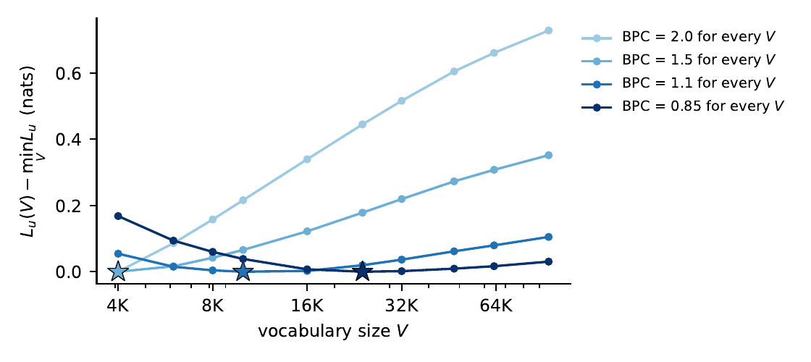
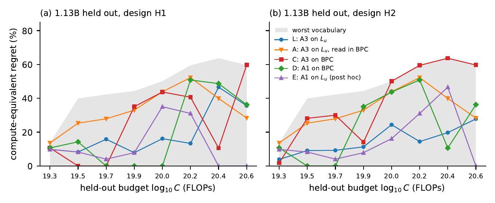

A Corrected Metric Does Not Validate a Vocabulary Scaling Law
A re-analysis of the compute-optimal vocabulary law of Tao et al. (2024) on their own 60 released training runs: what changes when the metric is fixed, and whether either version picks the right vocabulary at a model size it has not seen.
The metric picks a winner even when there is none
The law is fitted to a unigram-normalised loss Lu. Its normaliser depends on the tokenizer, so Lu moves with vocabulary size even when every vocabulary predicts the text equally well. Give all ten released tokenizers the same bits per character, and Lu still has a minimum, which grows as the common loss falls. That is the shape of the published conclusion, produced with no real difference between vocabularies.

What the correction changes
An exact identity converts each checkpoint's Lu to bits per character from measured tokenizer statistics. Refitting with Tao et al.'s own code:
| Lu | bits per character | |
|---|---|---|
| Exponent of vocabulary parameters | 0.416 | 0.302–0.316 |
| Optimal vocabulary at 7B | 62K | 53–56K |
| At 70B, frontier approach | 212K | 106K–119K |
| At 70B, parametric approach | 222K | 550K–764K |
On the original metric the two approaches give 212K and 222K at 70B. On the corrected one they disagree by a factor of five to six.
A held-out test
To ask whether a prescription is right, hide a whole model size, fit on the rest, and let each procedure pick a vocabulary at eight compute budgets for the hidden size. Score each pick against the best measured vocabulary, as the share of compute it wastes.

| Procedure | H1, 1.13B | H2, 632M | H2, 1.13B |
|---|---|---|---|
| L: parametric on Lu (Tao) | 14.6% | 20.8% | 12.9% |
| C: parametric on bits per character | 22.9% | 15.0% | 40.1% |
| D: frontier on bits per character | 12.5% | 5.0% | 22.9% |
| E: frontier on Lu (post hoc) | 8.1% | 13.5% | 9.0% |
| Worst vocabulary | 47.2% | 41.3% | 47.2% |
Median regret over eight budgets. With the fitting method held fixed, Lu beats bits per character in four of six comparisons.
A simpler rule
On DataDecide and on FAIR's released granularity grids, keeping every option within noise of the best at the largest measured scale contains the eventual winner, or misses it by at most 3.2 × 10−4 bits per byte. On Tao et al.'s release the same rule covers seven of eight budgets in one design and none in the other.
What it does not establish
- Seed variation. The release has one seed per run, so how much of the miss is noise cannot be measured from it. Seeded replication is the open question.
- That bits per character is the right target. The point is that a corrected metric changes the prescription without making it pass a held-out test.
- Behaviour beyond the released sweep. The largest held-out size is 1.13B, and a framework change at that size is the leading candidate explanation for part of the miss.
The paper is AI-assisted; its first-page footnote says how. Code, derived inputs, pre-written analysis rules and result tables are in the Zenodo supplement; third-party data are referenced by pinned source.